RecallOS User Manual
RecallOS keeps business cards, receipts, bills and warranties on your phone, and finds them later by what you needed them for. You remember the need. It remembers the name.
There is no account, and the app has no permission to use the internet. Everything you save stays on this phone unless you choose to send it somewhere.
Getting started
- Install RecallOS from Google Play and open it.
- Read the three welcome screens, or tap Skip.
- Tap Scan and save your first card.
RecallOS asks for two things, and only when you first need them:
- Camera, to scan a paper.
- Notifications, the first time you set a reminder.
Most features are free. The ones marked Plus in this manual come with RecallOS Plus, a single purchase.
The home screen
Everything starts here.
- Search box (What do you need?). Type what you remember, or ask a question.
- Reminder rows. These appear only when there is something to say: cards that need attention, your next step, and this month's receipt total. Tap one to open it.
- In your wallet. Everything you have saved, newest first. Tap to open. Swipe one to the left to delete it.
- Top right. Your own card, People, and Settings.
- Bottom row. Event Mode, add without scanning, and Scan.
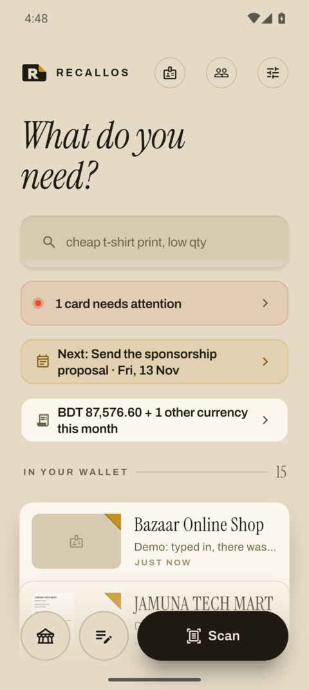
Adding something
Scan a card, receipt, bill or warranty
- Tap Scan.
- Hold the paper in the frame. The scanner finds the edges and takes the picture, or you can press the shutter. To use a photo you already have, tap the picture icon.
- Tap Next or Done in the scanner.
- RecallOS reads the paper and shows what it found. The photograph is saved first, so nothing is lost if the reading goes wrong.
- Check the details, then tap Save card, Save receipt or Save warranty.
If you do not like the picture, tap Retake.
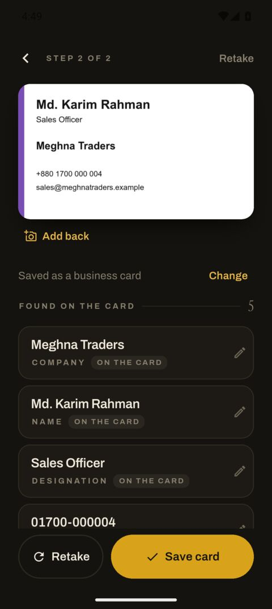
What did you save?
RecallOS works out by itself whether a paper is a business card, a receipt or a warranty. When the words could be either, it asks once. Tap the right one, or Keep the best guess. You can still change it with Change on the review screen.
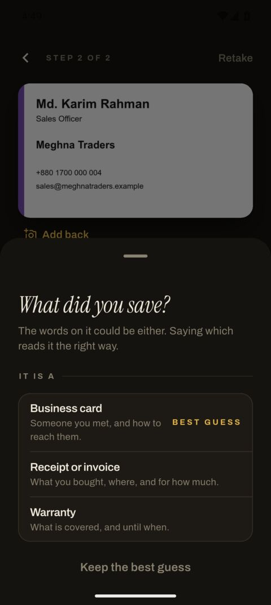
Why are you saving this?
After you save, RecallOS asks for one line in your own words. This is the most useful thing you can write, because it is how you will find the card when you have forgotten the name. Tap Skip for now if you are in a hurry, and add it later from the card's screen.
If nothing on the paper could be read, the card is still saved, and your line is what makes it findable.
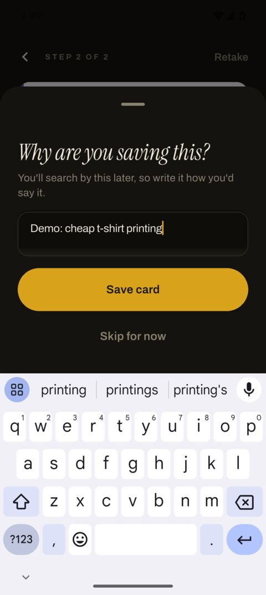
Both sides of a card
Tap Add back under the photograph and scan the other side. Front and Back then switch between them, and the menu beside them lets you Retake back or Remove back.
Tap a photograph to see it full size.
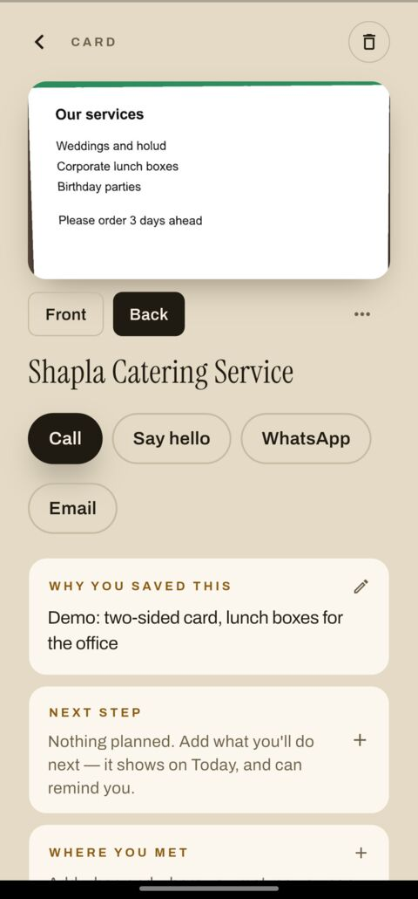
Without the camera
Tap the round button beside Scan.
Type it in is for something you have no paper for, such as an online order or a warranty someone told you about.
- Choose Business card, Receipt or Warranty.
- Write the one thing it is known by: a name, a shop or a product.
- Tap Add it, then use Add a detail on its screen for anything else.
From a file brings in a PDF, JPG or PNG up to 25 MB. It is read just like a scan. Only the first page of a PDF is kept, and a PDF with a password cannot be opened.
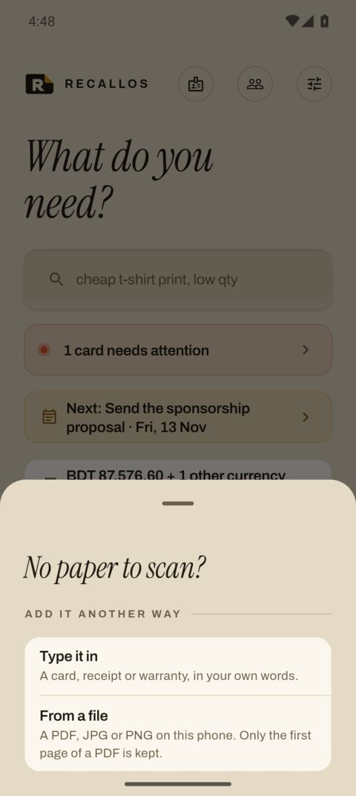
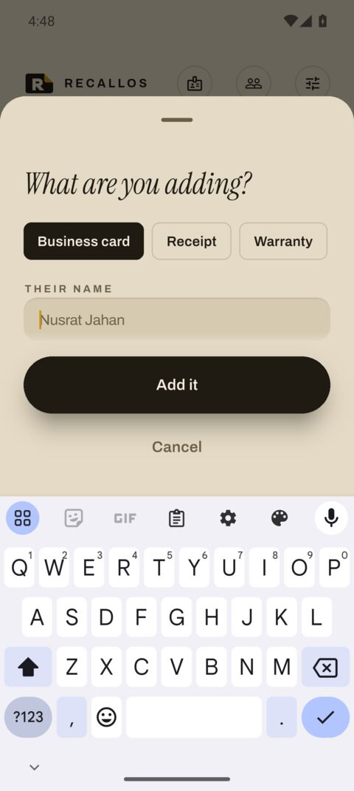
Checking and correcting
Reading a paper is a guess, so RecallOS never hides which values are guesses. Every value carries a small label:
| Label | What it means |
|---|---|
| On the card (or receipt, warranty) | Read from the photograph. |
| You confirmed | You checked it, or corrected it. |
| You typed | You wrote it yourself. |
| Calculated | Worked out by RecallOS, such as when a warranty ends. |
| Guess | RecallOS's suggestion, such as a spending category. |
| Needs a look or Check this | Please confirm this one. |
Fix a value
- Tap the value. Where it came from is boxed on the photograph, so you can compare.
- Choose the cheapest fix that works:
- Wrong label? Change it under What is this?
- Wrong words? Pick the right ones under Or take it from the card. Tap more than one to join them.
- Otherwise, type it.
- Tap Save. Tapping Save without changing anything confirms the value. Remove deletes it.
Add something it missed at the end of the list adds a new detail.
Cards that did not read well
Open the Needs attention row on home, or go through Settings. Open a card to fix it by hand, or tap Try reading them again. The same card often reads better on a second try.
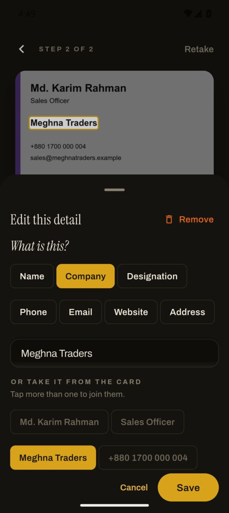
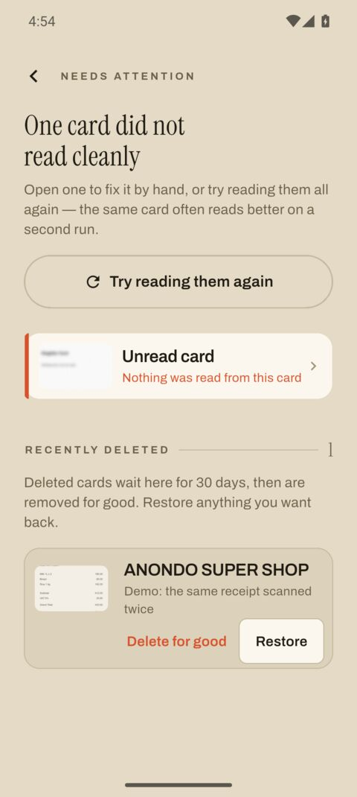
Search and Ask
The box on home does both. Type the way you would say it.
Search
Type part of a name, a company, a phone number, or best of all, what you needed: cheap t-shirt print. RecallOS looks at your notes and where you met first, then the words printed on the card. Each answer shows why it matched.
Ask
Ask a question and RecallOS answers from your own papers, and shows which ones. If it does not know, it says so.
- Who was interested in sponsorship?
- When does my laptop warranty expire?
- Met at CSE fest, met last week or who needs a next step Plus
- What expires in the next 90 days? Plus
- How much on electronics in September? Plus
Search runs on your phone and works with no connection.
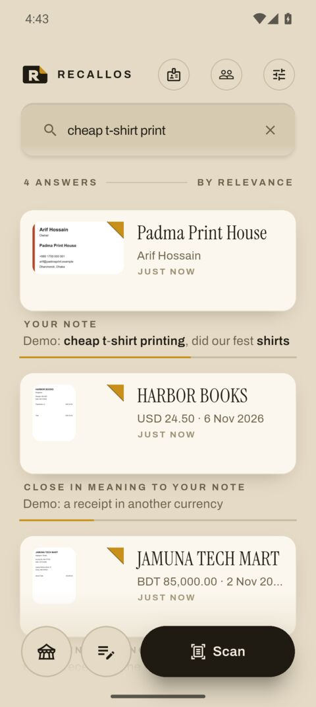
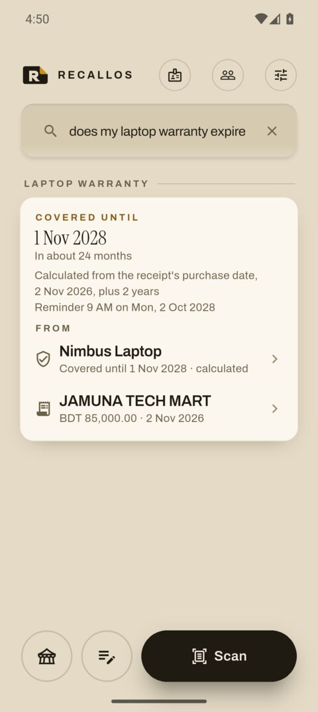
People and companies
Tap the People icon at the top of home. RecallOS builds this list from your cards, so one person with three cards is one entry. Search it by a name, a company or a place.
Open a person to see why you saved them, their numbers and emails for each business, next steps, and the cards behind it all. Save to contacts and Share are at the top. Companies work the same way.
Possible duplicates
Records that share a number or an email are combined by themselves. RecallOS never joins two people just because the names match. It asks you instead, under Possible duplicates.
- Same person shows them as one contact. You can undo this with Separate on their page.
- Different people keeps them apart.
- For the same card scanned twice, choose Keep both or Delete one.
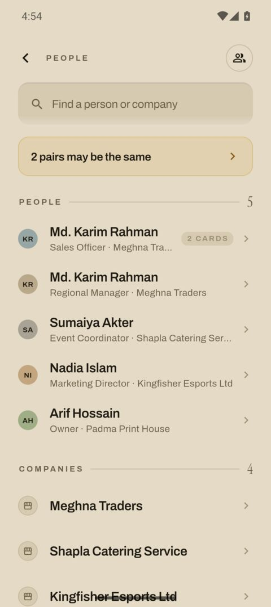
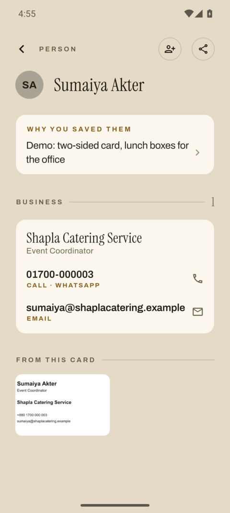
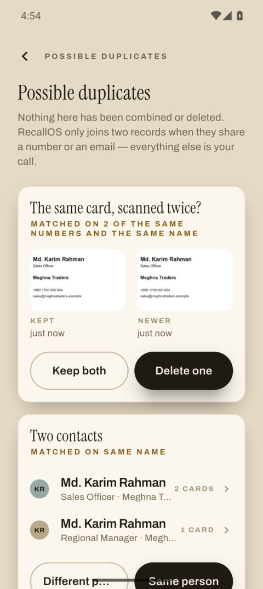
Next steps and reminders
Add a next step
- On any card, receipt or warranty, tap + beside Next step.
- Say what you will do.
- Choose when: Today, Tomorrow, In 3 days, Next week, or Pick a date.
- Leave Remind me on for a notification at 9 AM that day, or turn it off and it will only show on Today.
- Tap Add step.
The free version keeps five reminders waiting at a time. Warranty reminders are not counted. With five waiting, a new step is still saved and shows on Today. Plus removes the limit.
Today
Tap the Next or steps overdue row on home. Today lists what is overdue, what is upcoming, warranties ending soon, and anything needing review. Tap the circle to mark a step done. You can undo it straight away.
When a reminder arrives
The notification has Done and Snooze 1 hour. On the lock screen its content stays hidden until you unlock the phone.
Finished steps stay under Finished recently on the card, with Bring back if you need them again. Open a step and use Remove this step to delete it.
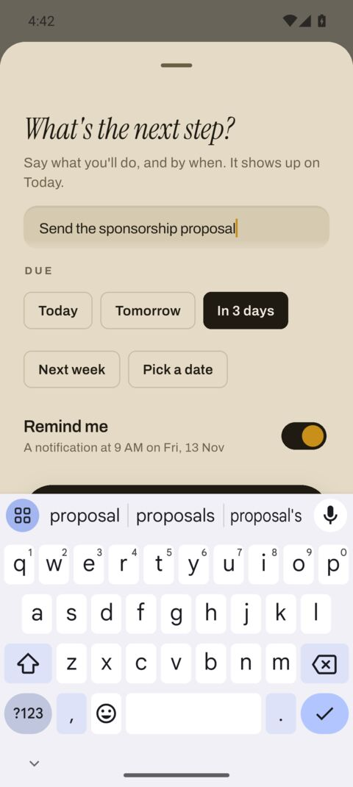
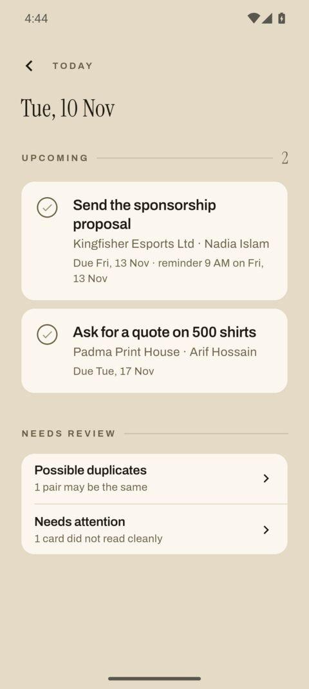
Where you met, and Event Mode
Where you met
On a card, tap + beside Where you met. Write the place, then choose Day I scanned it, Pick a date or Not sure. Only what you enter is saved.
Event Mode Plus
For a fair or a conference, where you collect many cards at once.
- Tap the round button at the bottom left of home.
- Name the event and tap Start the event.
- Scan as usual. Every card is marked as met there, that day.
- Tap End the event when you leave. You get everyone you met and what is next, in one list.
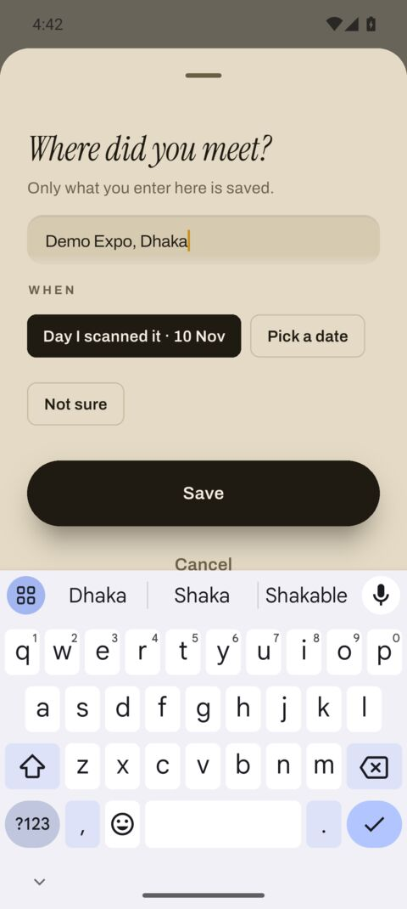
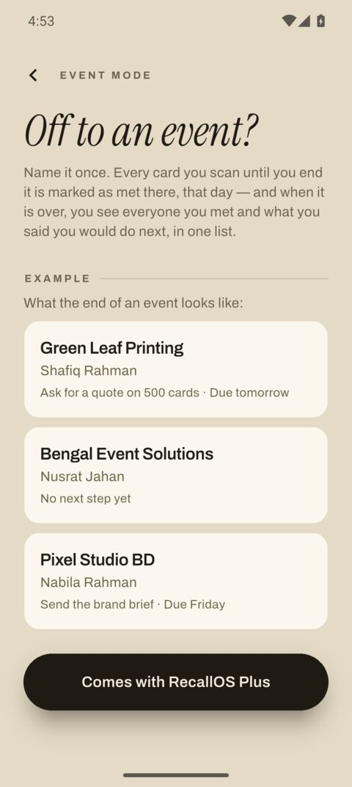
Reaching out
A card's screen has a button for each way to reach the person: Call, WhatsApp, Email, and Map when there is an address.
Say hello
Say hello writes a short message that mentions why you met. Change anything you like, choose WhatsApp, SMS or Email, and tap the Open in button. RecallOS opens that app with the message ready. You send it from there, and nothing leaves until you do. Make your own card and the message can be signed.
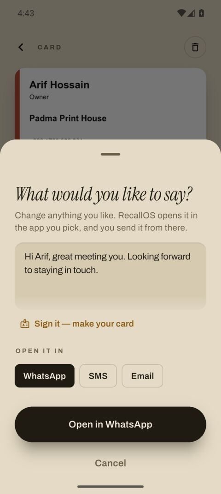
Your own card
Tap the card icon at the top of home, then Make my card. Add your name, what you do, your company and how to reach you, and a photo if you want one.
- Show as a QR code. Hold it up to someone's camera. Their phone offers to save you as a contact, and they need no app. The switches choose which lines are on the code.
- Send my card shares it to any app.
- Save to my contacts adds it to your phone's contacts.
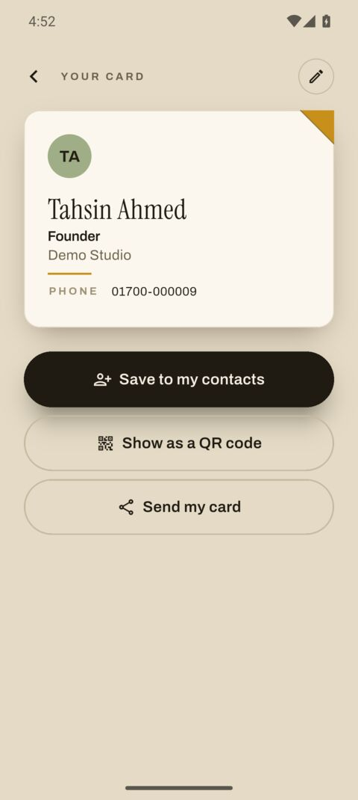
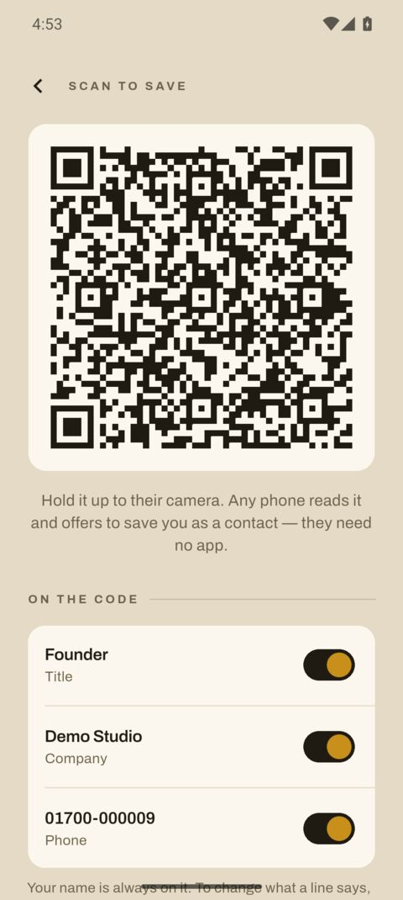
Receipts and bills
Scan a receipt, a bill or an invoice with the same Scan button. RecallOS reads the shop, date, total, invoice number and a suggested category.
Check the total and the date
A wrong reading would make a wrong sum, so these two are marked Check this. Tap each one and tap Save to confirm it. A receipt is added to your total only after both are checked.
Receipt totals
Tap the receipts row on home. The figure is what your saved, checked receipts add up to, which is not the same as everything you spent.
- Possible second copies. A receipt that looks like one already counted waits for your answer: Yes, bin this copy or No, count both.
- Not added yet. Receipts still to check, each saying what to do.
- Counted. Everything in the figure. Tap one to open it.
- Currencies. Each has its own total. Nothing is ever converted.
- Refunds. A refund slip comes off the figure and is marked Refund.
The free version shows this month. Other months and years, and what went to each shop and category, come with Plus.
The share button at the top sends a spreadsheet of the receipts behind the figure and the ones held back, each with why. You see what will go first.
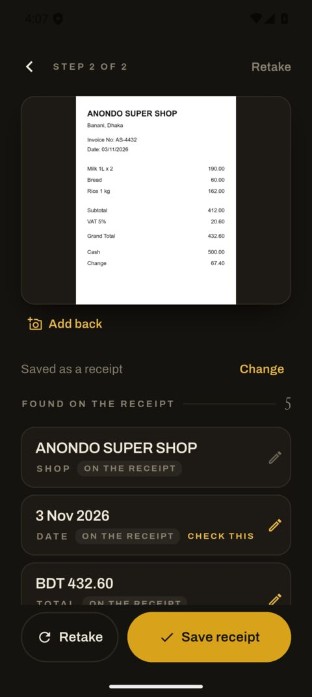
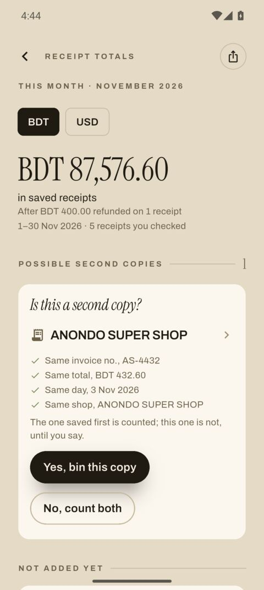
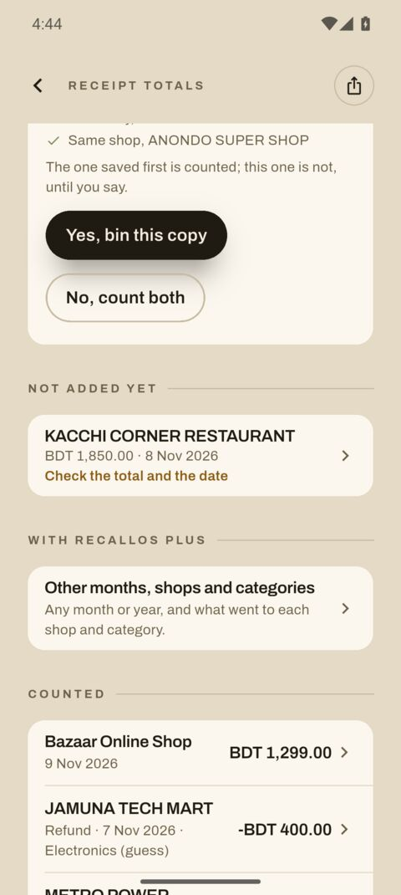
Warranties
Scan a warranty card and RecallOS reads the product, brand, model, serial number and length of cover.
Covered until
This shows the last covered day and how it is known: printed on the warranty, confirmed by you, or calculated from the purchase date and the cover.
Linking it to its receipt
A calculated end needs the purchase date, which is on the receipt. When a warranty and a receipt look alike, RecallOS asks Is this its warranty? and shows the evidence, such as the same serial number. Tap Yes, link them or Not this one. You can also use Link its receipt yourself, and Unlink later.
The reminder
RecallOS reminds you about a month before the cover ends, and the warranty shows under Ending soon on Today.
Sending papers to a shop
On a receipt or warranty, tap the share button at the top. Share these papers? shows every value with where it came from, and the photographs of that paper and the one linked to it. Nothing goes until you tap Share. The photographs are not encrypted once they leave.
RecallOS records what the papers say. It cannot tell you whether a shop or a maker will accept a claim.
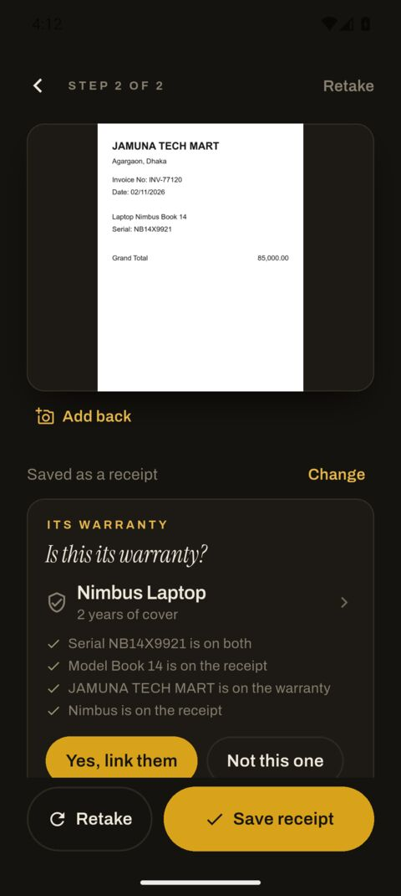
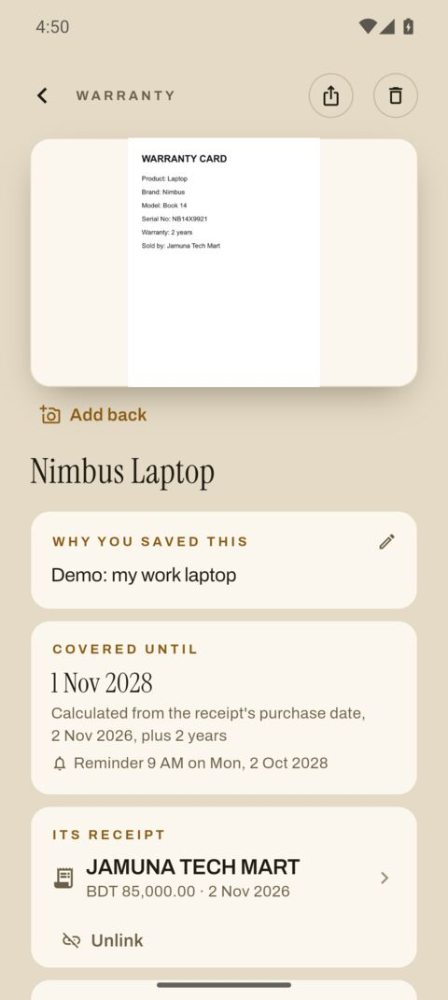
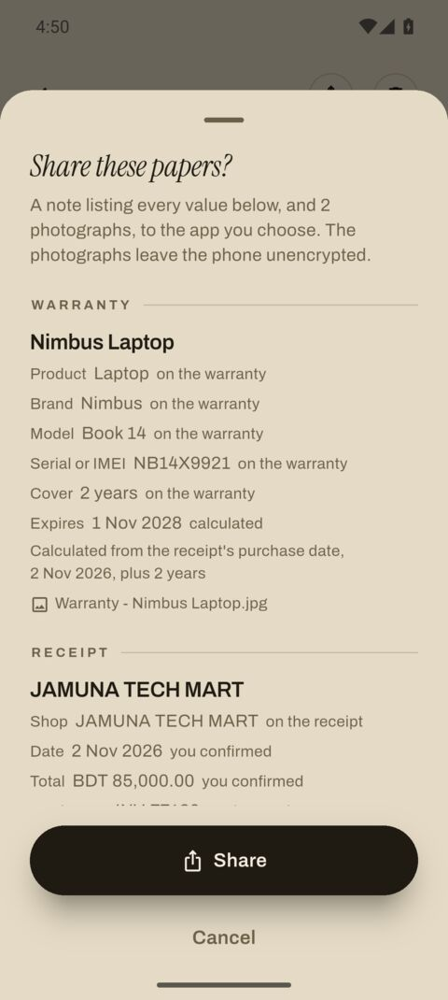
Deleting and restoring
Open a card and tap the bin at the top, or swipe it to the left in the wallet. It moves to Recently deleted, under Needs attention, and waits there for 30 days.
- Restore brings it back as it was.
- Delete for good removes it and its photographs. This cannot be undone.
To remove everything, uninstall RecallOS. Without a backup, this cannot be undone.
Privacy and the lock
- On this phone only. RecallOS has no permission to use the internet, and tells Android not to back it up.
- Encrypted. Names, numbers, notes and photographs are scrambled on this phone with keys only this phone holds.
- Lock the wallet. In Settings, turn this on to ask for your fingerprint or PIN when the app opens. If your phone has no screen lock yet, the row takes you to where you can set one.
- Lock after. Immediately, After a minute, After 5 minutes or After 15 minutes. Immediately also locks each time you scan or make a call.
- Lock now. Closes the wallet without waiting.
Anything you share to another app is up to that app. Backups are encrypted. Take a copy and shared photographs are not.
Backup and moving to a new phone
Your wallet exists only on this phone. If you uninstall the app or lose the phone without a backup, it is gone. Google cannot restore it for you.
Back up the wallet
- In Settings, tap Back up the wallet.
- Choose a passphrase of at least 10 characters. A short sentence is easiest. Nobody can reset it. Write it down somewhere safe.
- Save the file somewhere that is not this phone, such as your email, Google Drive or a computer.
Restore on a new phone
- Install RecallOS, then in Settings tap Restore from a backup.
- Pick the file and type the passphrase.
- You see what the backup holds before anything changes. Confirm, and the app restarts to finish.
Restoring replaces everything on that phone. It does not merge.
Take a copy
Take a copy makes a readable archive for other apps, with your contacts, notes and photographs. It is not encrypted and cannot be restored, so keep it private and use a backup for safekeeping.
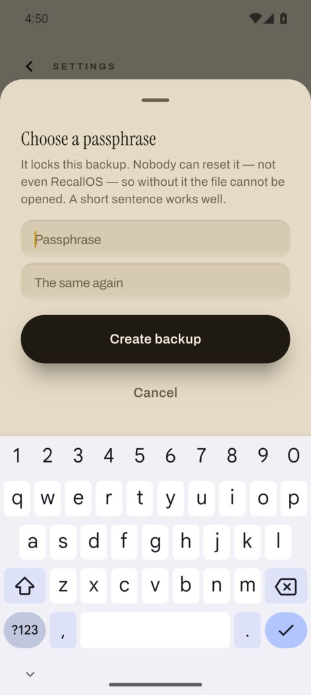
All the settings
| Row | What it does |
|---|---|
| Your card | Your own card and QR code. |
| RecallOS Plus | What it adds, buying, and restoring. |
| Recently deleted | Deleted items, kept for 30 days. |
| Duplicates to review | Pairs that may be the same. |
| Needs attention | Cards that did not read cleanly. |
| Lock the wallet | Fingerprint or PIN to open. |
| Your wallet is encrypted | Says whether the wallet opened encrypted. |
| On this phone only | Says that nothing is uploaded. |
| Back up the wallet | One encrypted file to keep off the phone. |
| Restore from a backup | Replaces the wallet with a backup. |
| Take a copy | A readable archive for other apps. |
| Appearance | Follow system, Always light or Always dark. |
| Version | Tap to copy it, for a bug report. |
| Help | Short answers, in your browser. |
| Send feedback | Opens your email with the version filled in. |
| Privacy policy | What RecallOS keeps and never sends. |
| Licences | The fonts, search model and libraries used. |
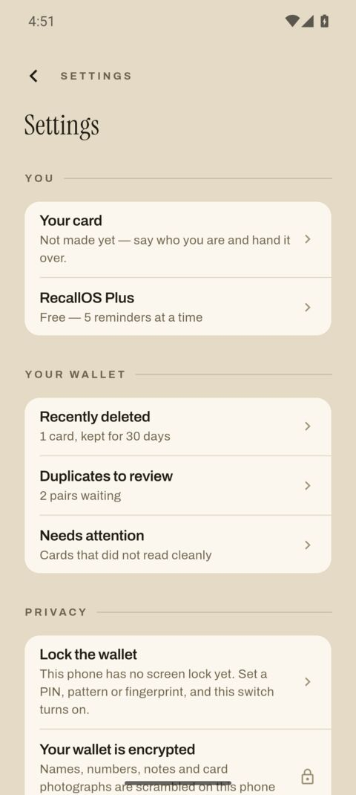
RecallOS Plus
One payment, with no subscription and no account. It is bought through Google Play at Play's own price for your country.
| Free | Plus adds |
|---|---|
| Scanning, reading and correcting | No limit on reminders (free keeps five waiting) |
| Search, notes and next steps | Event Mode |
| Receipts, warranties and this month's total | Receipt totals for any month, by shop and category |
| When a warranty ends, and its reminder | Finding people by when you met |
| Say hello and your QR code | Asking about dates and totals |
| Backup, restore and the lock |
- New phone: sign in to the Play Store with the same Google account and Plus comes back by itself. If it does not, open Plus and tap Already bought it? Restore.
- Refunds go through Google Play. If Plus is refunded, the app returns to the free features and nothing in your wallet is deleted.
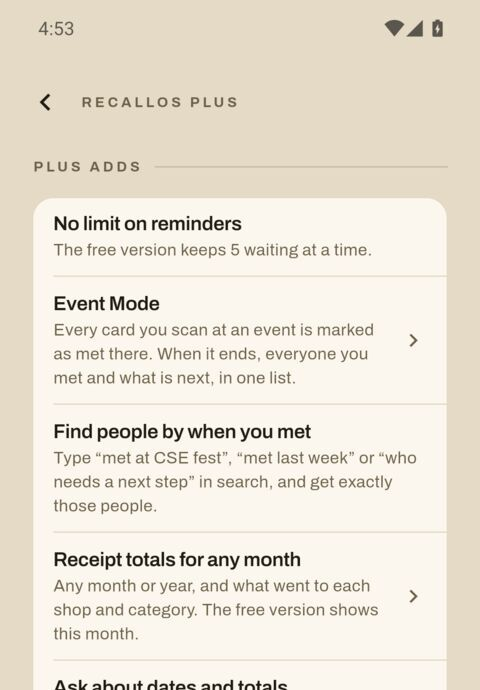
The demo set
The app on the demonstration phone holds a set of made-up records, one for each feature. The people, shops and serial numbers are invented, phone numbers are placeholders, and email addresses use the reserved .example domain.
Every demo record's note starts with Demo:, so searching for demo finds them. To clear one, open it and tap the bin. It goes to Recently deleted and disappears after 30 days.
| Feature | Record | What to look at |
|---|---|---|
| Business card | Padma Print House, Arif Hossain | Search cheap t-shirt print. A next step with no reminder. |
| Reminder, where you met | Kingfisher Esports Ltd, Nadia Islam | Step due Fri 13 Nov with a 9 AM reminder. Met at Demo Expo. Ask Who was interested in sponsorship? |
| Two-sided card | Shapla Catering Service, Sumaiya Akter | Front and Back on the card. |
| Duplicates | Md. Karim Rahman, twice | Different numbers, so RecallOS asks. Settings, Duplicates to review. |
| Needs attention | Unread card | Nothing could be read. Search nothing could read. |
| Receipt | Anondo Super Shop, BDT 432.60 | Date and total confirmed, so it is counted. |
| Second copy | Anondo Super Shop again | Receipt totals asks Is this a second copy? |
| Utility bill | Metro Power Company, BDT 1,245.00 | Counted. |
| Unchecked bill | Kacchi Corner Restaurant, BDT 1,850.00 | Listed under Not added yet. |
| Other currency | Harbor Books, USD 24.50 | Tap USD in Receipt totals. |
| Refund | Jamuna Tech Mart, -BDT 400.00 | Marked Refund, and comes off the figure. |
| Typed record | Bazaar Online Shop, BDT 1,299.00 | No photograph, and everything typed. |
| Linked warranty | Nimbus Laptop, with Jamuna Tech Mart's BDT 85,000.00 receipt | Covered until 1 Nov 2028, calculated. Ask When does my laptop warranty expire? |
| Printed warranty | Frostline Refrigerator | Covered until 15 Jan 2027, printed. Reminder on 16 Dec. |
The figure in Receipt totals is BDT 87,576.60 for November 2026: 432.60 + 1,245.00 − 400.00 + 85,000.00 + 1,299.00.
The source papers are in the phone's Download/RecallOS-demo folder, for trying From a file again. The demo reminders are real, so that phone will show notifications on those dates unless the records are deleted.
What RecallOS does not do
- Coupons, tickets, memberships, insurance or ID documents. It saves business cards, receipts or bills, and warranties.
- Long documents. A record has a front and a back. Only the first page of a PDF is kept.
- Bangla text. The phone's text reader reads English letters and numbers, so a name printed only in Bangla is usually not read. Write it in the note or type it in, and search will find both.
- Sync. Nothing moves between phones by itself. Use a backup.
- Sending for you. RecallOS prepares a message and opens your own app. You send it.
- All your spending. Totals cover only the receipts you saved and checked.
- Claims. It records what a warranty says, and cannot promise a shop will honour it.
If something goes wrong
| What you see | What to do |
|---|---|
| A value is wrong | Tap it and correct it. |
| A receipt is not in the total | Open Receipt totals. It says what to check. |
| A reminder did not arrive | Check that notifications are on for RecallOS. Today says so when they are off. Some phones stop idle apps, so allow RecallOS to start by itself in your phone's settings. After a restart, reminders return once you unlock the phone. |
| Travelling | Days and times follow the phone's clock. A 9 AM reminder stays at 9 AM where you are, once you have opened RecallOS there. |
| Your phone is out of storage | That item was not saved. Free some space and try again. |
| A file is refused | The message says why: wrong type, over 25 MB, damaged, or password-protected. |
| Forgot the backup passphrase | It cannot be recovered, and that backup cannot be opened. Make a new one while you still have the wallet. |
| Plus did not unlock | Open Plus and tap Already bought it? Restore. |
Still stuck? In Settings, tap Send feedback. It opens your email with the app's version filled in, and you see it all before it is sent. Short answers are also in Help.